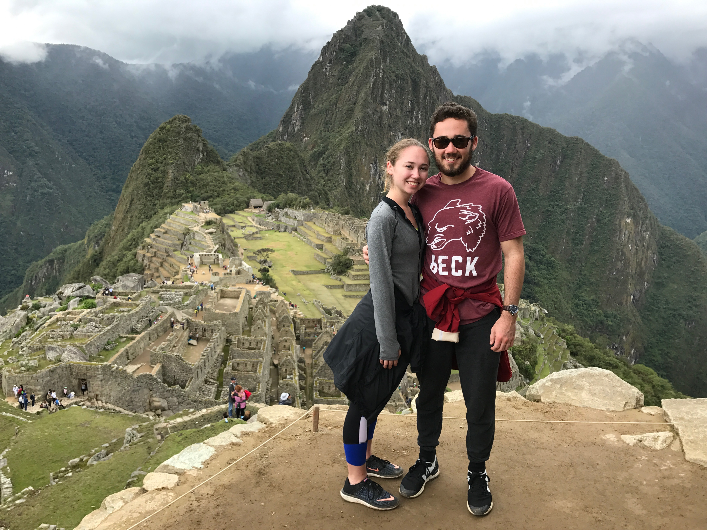
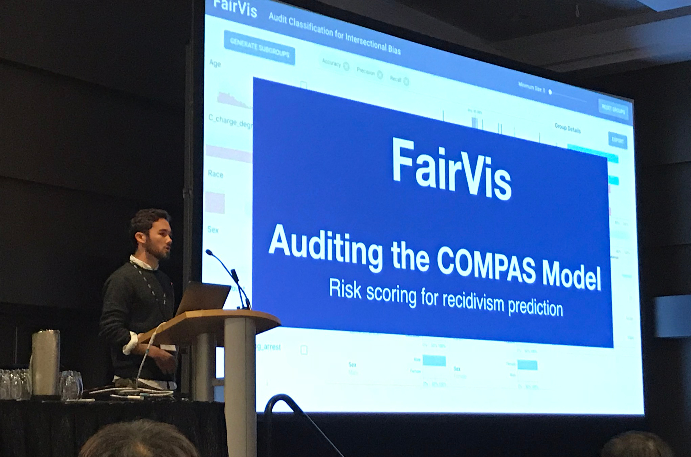
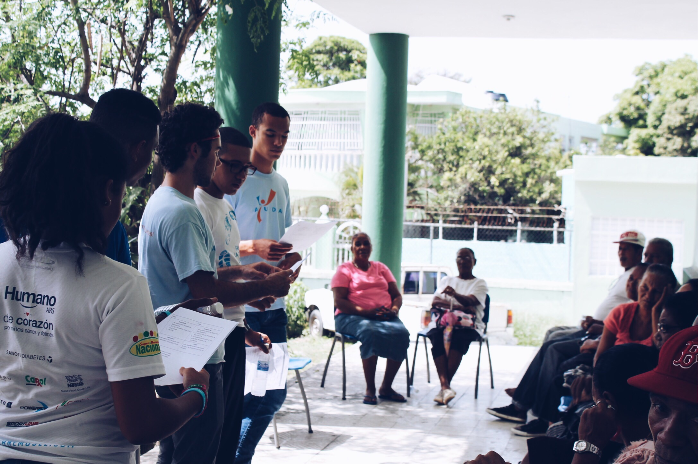
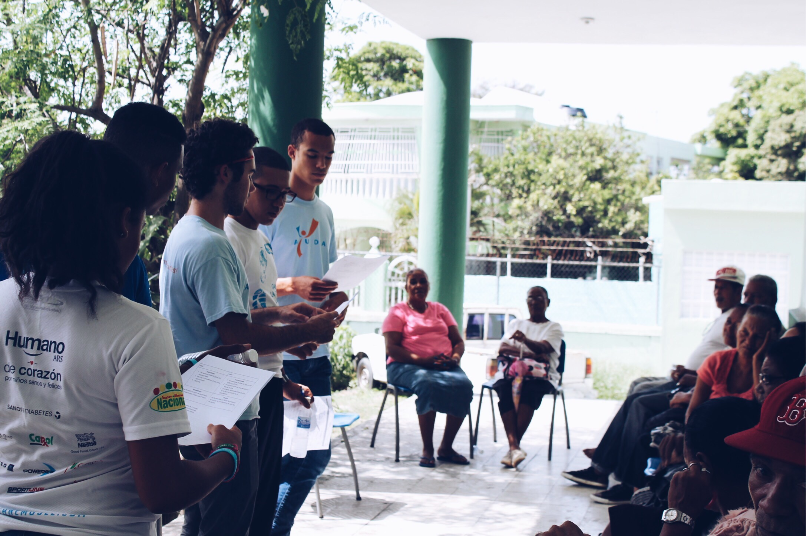
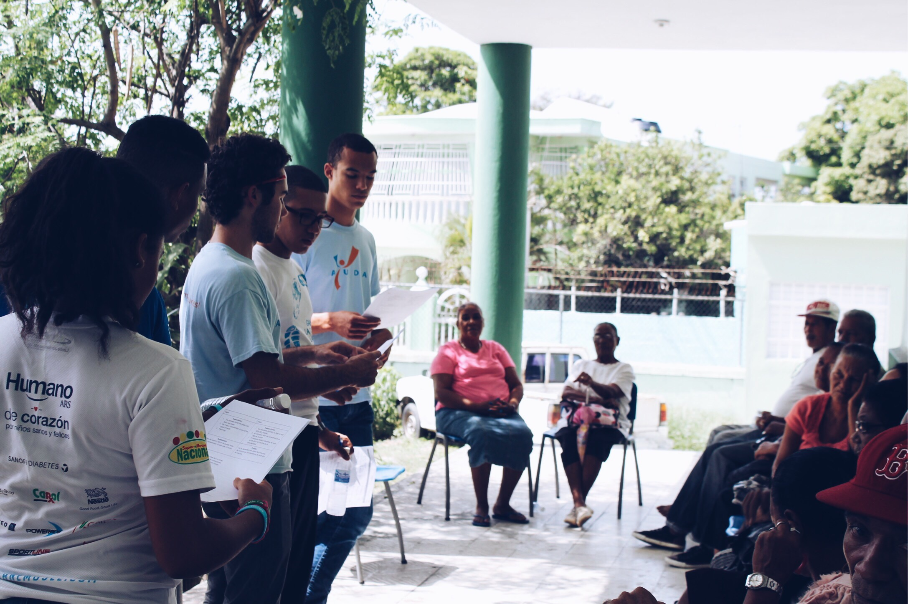

Hi! Welcome to my site. I am an undergrad Computer Science student at Georgia Tech with a passion for
software, especially related to AI and database systems. Here you can learn more about my interests,
my projects and my goals.
Will's Bio
Born and raised in Atlanta, I am now an undergrad student at Georgia Tech expecting to graduate in May 2020. At Tech, I am studying Computer Science with a minor in Spanish. After undergrad, I hope to pursue a master’s degree in Machine Learning. Outside of class I enjoy travelling, running and hiking, and reading anything by Malcom Gladwell that I can get my hands on.



Projects
Citadel Datathon
February 2018
Participated in Citadel and Correlation One's Datathon at Georgia Tech, using Machine Learning tools like Scikit-learn to draw insights from datasets and produce report about how to make cities safer. Team placed in Top 3.
Amazon Alexa skill using Amazon AWS and Node JS connecting to Atlassian’s JIRA Agile management
software to allow for verbal control of team management.
Student-led AE cube satellite project funded through Air Force Research Lab to track space objects from low earth orbit. I work on Avionics sub-team writing C code in Linux environment to allow communication between core state machine and battery system and assisted in development of state machine.
C Embedded Software Linux Git
Rate A City
July 2017
Desktop application and database backend for rating and reviewing cities and attractions in those cities developed while studying in Barcelona. Utilized JavaFX interface, MySQL database, and JDBC connection.
Web and iOS app created at hackathon to track visitors to office complex through QR codes and geofencing. I worked on web app to support Google maps integration and QR code generation with JavaScript library.
If you'd like to know more about my projects, feel free to reach out over email!
Relevant Coursework & Skills
Coursework
CS 1332: Data Structures and Algorithms
CS 2110: Computer Organization and Structures
CS 3600: Intro to Artificial Intelligence
CS 4400: Intro to Database Systems
CS 4460: Information Visualization
CS 4641: Machine Learning (In Progress)
CS 3630: Intro To Perception & Robotics (In Progress)
CS 2200: Systems and Networks (In Progress)
Skills
Languages
Java
Python
C
HTML
CSS
JavaScript
Programs & Services
MacOS
Python
Microsoft Windows
Linux
Tableau
REST Web Services
Git
Agile Methodology
Libraries & Frameworks
CSS Bootstrap
JavaScript D3
JavaFX and JDBC
Other
Fundraising
Team Management
Advanced Spanish
Work & Experience
(Incoming) Software Engineering Intern
Ultimate Software
Summer 2018
I will be interning at Ultimate Software in Weston, Florida in Summer 2018 to continue to learn and develop as a software engineer.
Undergrad Teaching Assistant
Georgia Tech College of Computing
August 2017 - Present
At Georgia Tech, I am a TA for CS4400 – Intro to Database Systems, a class focusing on relational database design and SQL. As a TA, my responsibilities include office hours, grading, and project creation.
As a Volunteer Mentor for AYUDA, I led a 10-person team in the planning and implementation of diabetes education programs in Dominican Republic. Before going in country, I helped advise and educate volunteers on aspects such as fundraising, diabetes education, and working in the DR.
To read more about my experiences with AYUDA, read my blog from volunteering in 2015 or 2016.
While interning at The Home Depot, I developed a web app for tracking interns throughout the hiring process for internal HR use. This project allowed for more streamlined hiring and replaced cumbersome excel sheet previously used.


 
